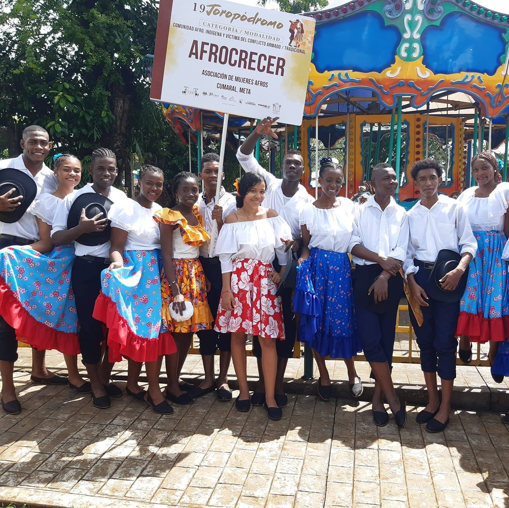
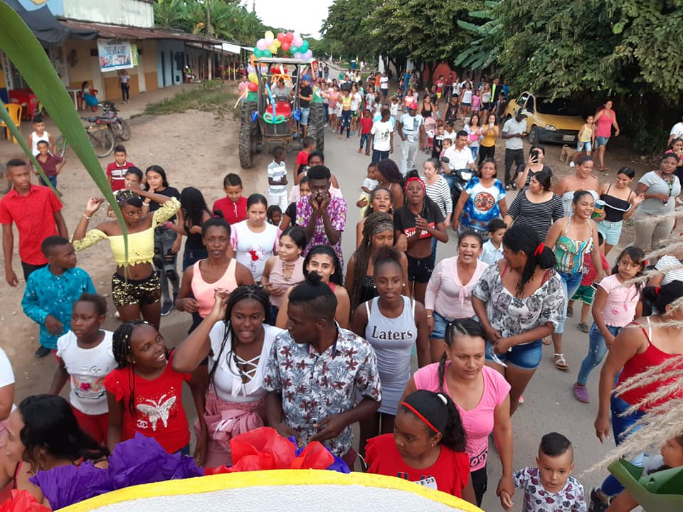
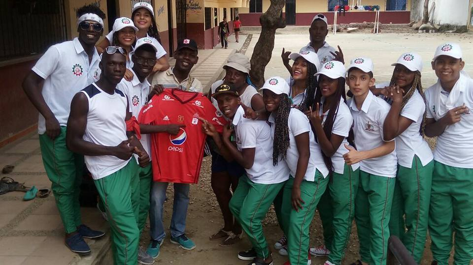
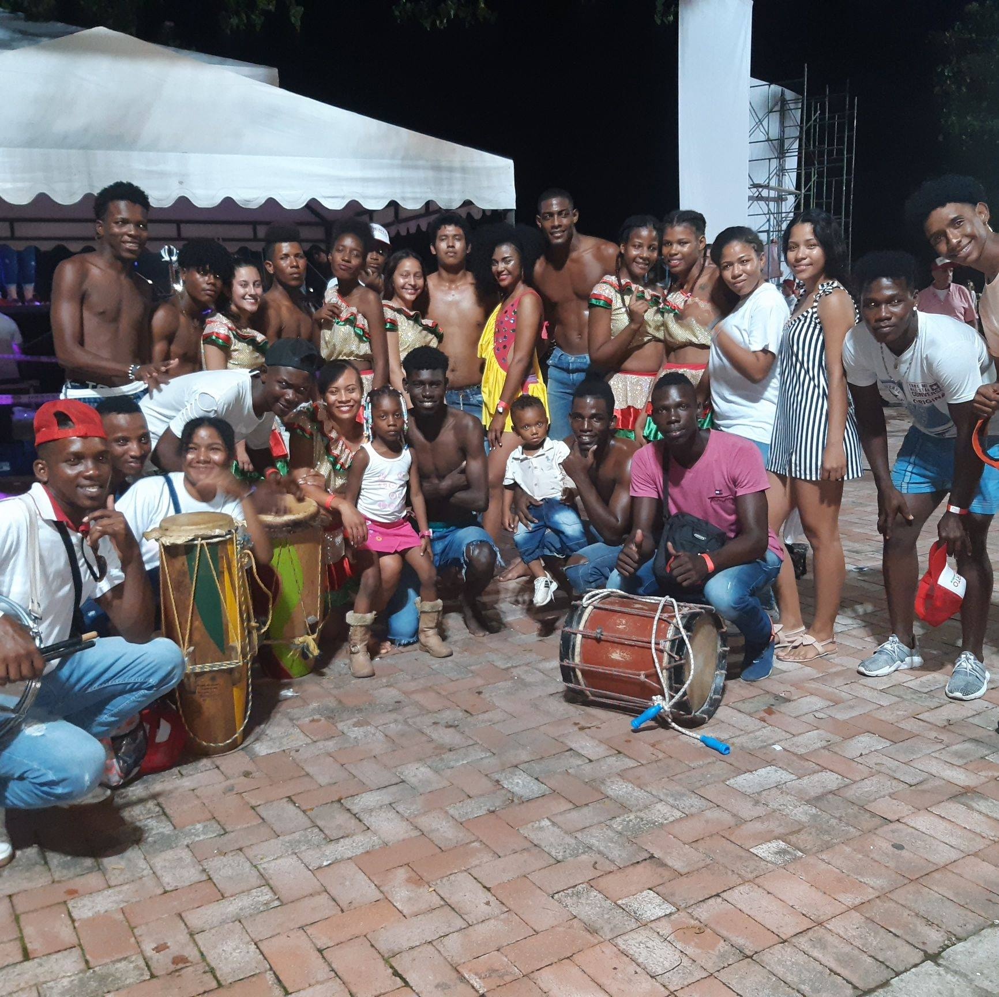
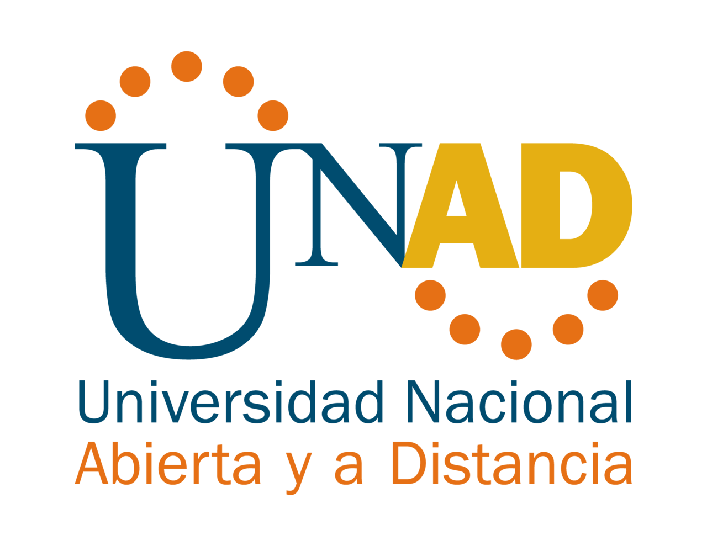
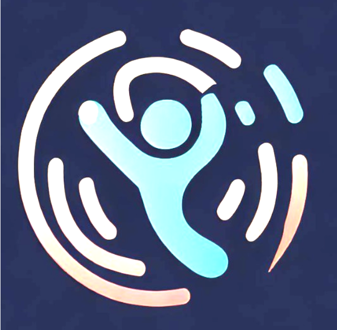

▤
Archivo cultural
Danza, música, oralidad y prácticas ancestrales en un espacio de reconocimiento cultural.
Memoria afrollanera en red
Plataforma cultural comunitaria para preservar, organizar y difundir la memoria viva de Veracruz, Cumaral con una narrativa visual contemporánea y territorial.
Una narrativa digital que integra cultura, archivo y participación territorial.
Danza, música, oralidad y prácticas ancestrales en un espacio de reconocimiento cultural.
Registro organizado de contenidos audiovisuales y memoria comunitaria para consulta permanente.
Participación de liderazgos, juventudes y aliados en procesos de preservación e innovación social.
Tres miradas del territorio afrometense en formato equilibrado.

Danza tradicional
Encuentro comunitario
Juventud y memoriaRelatos visuales y memoria viva con reproducción automática.


Encuentros próximos para fortalecer identidad y tejido comunitario.
Testimonios sobre memoria, identidad y participación cultural.

“Afrocrece nos permite mostrar nuestra danza y mantener viva la tradición.”
María R.
“Aquí compartimos emprendimientos y avisos que sí llegan a la comunidad.”
José A.
“El archivo audiovisual nos ayuda a preservar nuestra memoria afrometense.”
Luz M.Instituciones que fortalecen la plataforma cultural Afrocrecer Digital.



Explora, participa y fortalece el archivo vivo de Veracruz junto a la comunidad Afrocrece.